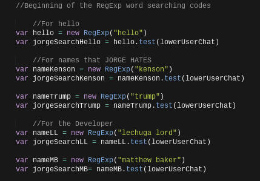
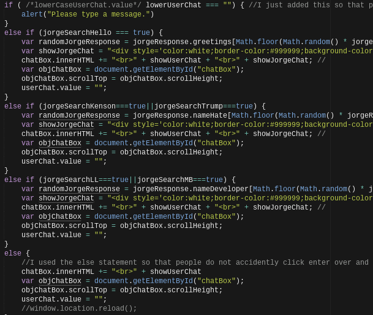
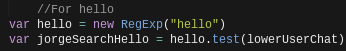
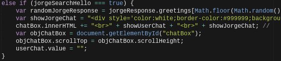

Well, it was that time of the year again. School was almost out. Study trip was coming up. And it was AP testing time. All of these factors contributed to high levels of fatigue, laziness, and flat out procastination. Never the less, I still managed to finish my big end of the year project. What exactly was my project? Well given the context, this project was not neccescarily HUGE, instead it was big as it combined everything that we learned throughout the year into this one project. For me, that project was a not so intelligent Chat Bot.
First off, the name of my chatbot is JORGE. I don't really know why, it just is. But JORGE isn't that smart, all he does is look for certain words and has a response if he see's one of those words.
I was able to make Jorge do this through an HTML interface by utilizing javascript. Here is the list of words that I have JORGE listening for:
Seems simple enough right? Well, maybe not, so let me break it down. In order to break it down it is important to explain again what my chatbot is actually doing. The whole process starts with the user sending a string of chat to the bot. The bot then searches for one of these keywords that I have listed above. The bot then has an if else statement that it goes through to see if any happen to be true.
The first statement to be true then triggers a written response from Jorge. Pretty easy right? Wrong.
First off, the user may write a keyword but also include additional. For example, the user could type "Hello there!"The chatbot on the other hand may be looking for just hello. While the user’s string does infact have hello in it, the addition of "there"can not be reasoned by the computer. So, how exactly can we make the chatbot be smart enough to look for a word, but be reasonable to interpret the actual meaning of the statement? Well this can all be done through the use of Regular Expressions.
What a regular expression is, is a defined pattern. This defined pattern can then be seen as an object by the program. So when the program see’s a string, it does not have to compare the string as either true or false. Instead it tries to find out if the object is in the string or is not in the string, again true or false. Given this context, we can define a certain pattern for the computer by creating a variable. Later in the if else statements we check to see which of these objects is true or false.
Let me give you an example. The most basic response that I have JORGE set to look for is "Hello."
As you can see, I am creating a variable. For this variable, I want it to be the pattern(regular expression) of "hello." But where exactly is it going to look for this pattern at? Well, to tell the computer where to look we have to create a new variable. This variable is equal to the name of the pattern that we created previously. We then tell the program what we want it to do which is test. By using test we get a true or false statement which is exactly what we want. Finally, all we need it to do is search where the user string is, which in the case of my ChatBot is always going to the lowerUserChat. Finally we have all of our else if statements that take this true or false as the trigger for the written response.
And boom, that’s how we can give the artificial intelligence a little more intelligence. We now have the power to make as many keywords that we please.